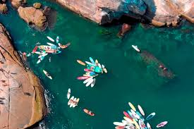
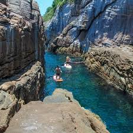
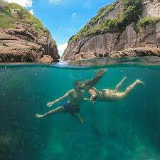
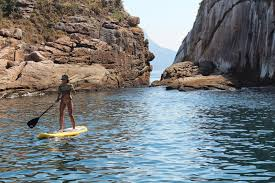

Ilhas Tijucas
Conhecido como o "Caribe Carioca", este arquipélago oferece águas cristalinas perfeitas para mergulho e relaxamento.

Dica do Capi:




Duração
⏳ 4 horas de passeio
Valor Médio
R$ 150 por pessoa
Um Mergulho no Paraíso
O passeio para as Ilhas Tijucas começa navegando pelos belos canais da Gigóia até encontrar o mar aberto. O arquipélago, formado pelas ilhas Alfavaca, Pontuda e do Meio, é um refúgio de vida marinha, sendo muito comum nadar ao lado de tartarugas e peixes coloridos.
Destaques do Passeio
- ✓ Águas cristalinas para banho
- ✓ Observação de tartarugas marinhas
- ✓ Visual incrível da orla da Barra
- ✓ Roteiro de aproximadamente 4 horas
Condições
Este passeio depende estritamente de boas condições de mar e vento.
Dica de Ouro
🤿 Leve sua máscara de mergulho para aproveitar a visibilidade!